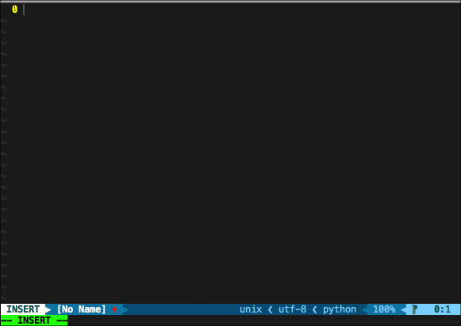

introduction
UltiSnips¶
For details of Ultisnips, please refer here.

.It's easy to write an UltiSnips sippets, for example, in Python,
I usually use import IPython; IPython.embed() for debugging.
And you could write snippts like this:
# Atention, this code must be put in python.snippets for `Python` code.
snippet dbg "Use IPython to debug"
# ---------- XXX: Can't GIT add [START] ---------- #
import IPython
IPython.embed(using=False)
# ---------- XXX: Can't GIT add [END] ---------- #
endsnippet
The UltiSnips snippet bej snippet, end with endsnippets
The whole snippst is surrounded with snippet and endsnippets,
while the dbg is the triger, and "Use IPython to debug" is
description for this snippet. At my vim:

VScode snippets¶
In VScode, there is an origin snippets syntax to manage your own snippets. But I found it may not very easy to use:
- If there is a multi-line snippet,
jsonis not very well for storing. - It's hard for many PC sync the snippets. Because of this, there have been too many snippets extensions for different languages, like, C/C++ Snippets, Bootstrap 3 Snippets.
I do not mean that it's bad for different language having their own extension. But you must admit that if you wanna add snippets for a language, you need to learn how to write an extension and how to add snippets. and what's most important is that if you are an Vimer, you had to write snippets for these two editors, which bothers me.
How to use Vsnips¶
This plugin base on the snippet api in VScode, weather you have used UltiSnips or not, it's easy to start. I have adapted some UltiSnips snippets to VScode and used it by default.
If you have already use UltiSnips, and even have your own snippets,
you can add own snippets dir in settings, and use the variable in VarFiles
after set that.
{
"Vsnips.VarFiles": [
"/home/corvo/.vimrc",
"/home/corvo/.vim/common.vim",
],
"Vsnips.SnipsDir": [
"/home/corvo/.vim/UltiSnips"
]
}
When you give the variable like let g:snips_author="corvo", you could
use it like snippets below.
snippet full_title "Python title fully"
#!/usr/bin/env python
# -*- coding: utf-8 -*-
# vim: ts=4 sw=4 tw=99 et:
"""
@Date : `!v strftime("%B %d, %Y")`
@Author : `!v g:snips_author`
"""
endsnippet
Have done¶
- Multi language completions support after installing
- Allow user add their own Ultisnips.
- From Ultisnips to VScode snippets.
- Support strftime
- Allow user define variables
- Allow some functions(Rewrite by javascript)
- Syntax highlight for snippets
- Allow user define their own functions
- Support autoDocstring(Python, TypeScript, Golang)
- Support box command
Doing¶
- Support extends and priority in Ultisnips
- Add support for golang function comments.